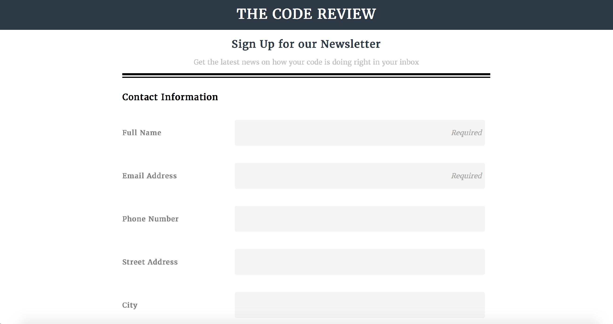

-
Application Monitoring Dashboard

This is my most recently completed project. It includes the chart.js API along with some handwritten HTML, SASS, and plain JavaScript. It has an auto-complete feature and uses customized client-side form validation along with local client-side storage.
-
Online Form
This was my introduction to the online form in HTML 5. This project demonstrates my ability to select these elements and make use of any form element on any project in accordance with a given design.
-
508 Compliant Front End Refactor

This Project was a refactor of a non-compliant front end. I was introduced to a lot of great resources for validation purposes in accessibility and saw the depth of HTML 5 that has been created for screen-readers and users with disabilities.
-
Custom Made Video Player

The purpose of this project was to acquire and demonstrate compentency with the native Video Element on the DOM API. I created this project using plain JavaScript and the video events associated with the HTMLMediaElement Interface.
-
Photo Gallery and Lightbox

This was my first JavaScript project. I built a light box gallery and a search feature utilizing jQuery. Captions are pulled from the alt attribute on the image element and serve as the repository the user searches against.
-
SVG Design

This project introduced me to SVG's and their distinctives within the world of design. In this project the SVG's are responsive depending on the viewport. Since the completion of this project I seek to exclusively use SVG's for icons and logos because they are so flexible to suit the need of the design.
-
Responsive Artist Portfolio

This was a personal project that served as my wife's portfolio site for a short time. Using vanilla JavaScript I created my own lightbox gallery from scratch. Ecommerce store for her is next!